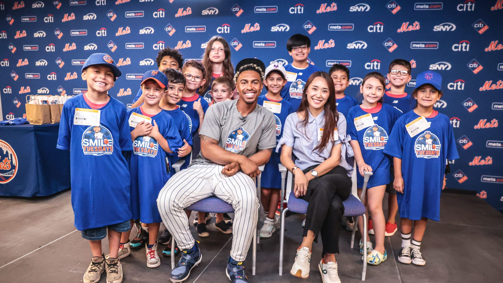
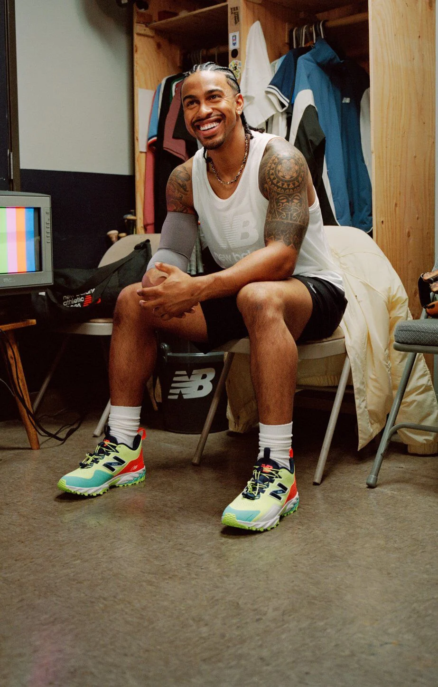
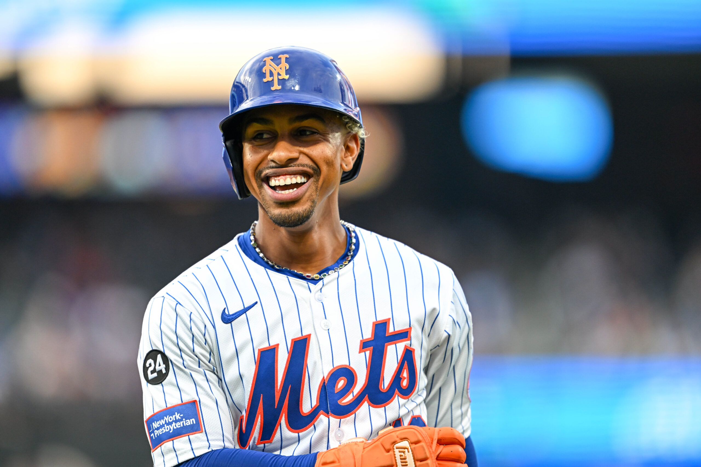
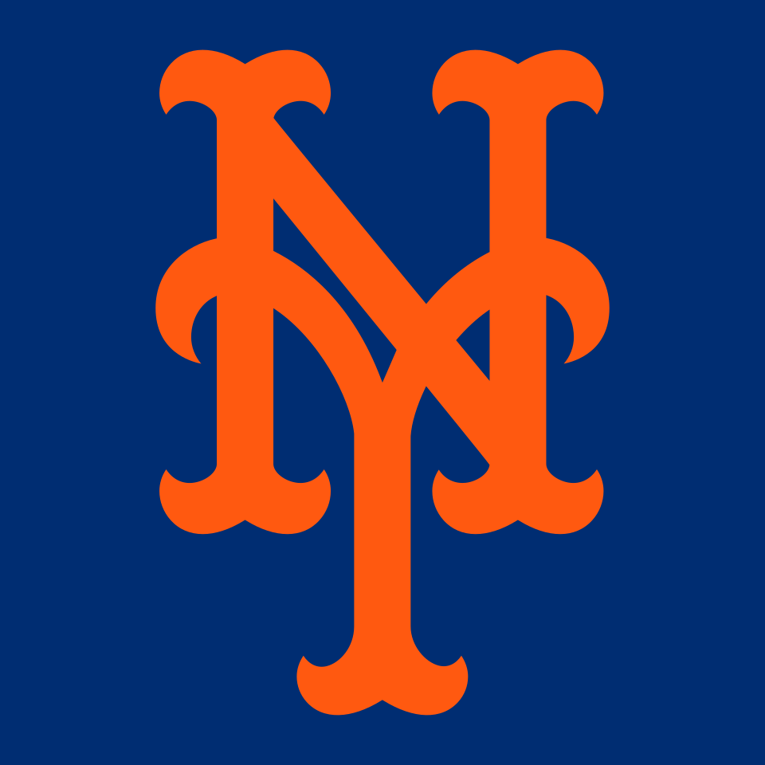
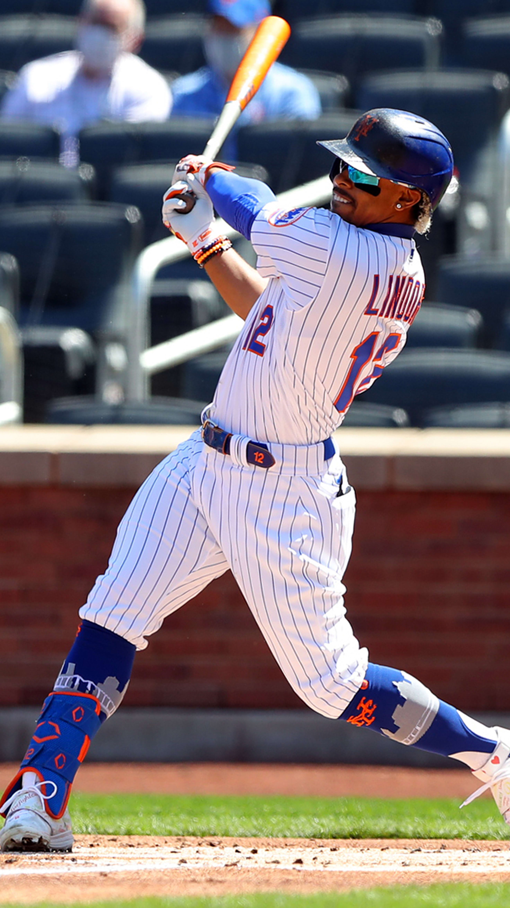

Francisco Lindor, nicknamed Mr. Smile for his charisma, is a baseball player for the New York Mets organization. He was born on Nov. 14, 1993 in Caguas, Puerto Rico. The Cleveland Indians drafted Lindor in 2011, and he made his official Major League Baseball debut on June 14, 2015, according to mlb.com. In 2021, Lindor was traded to the New York Mets and signed a $341 million contract extension for 10 years. This was one of the largest contracts in MLB history. He is known for his high-level defense, and finished second to superstar Shohei Ohtani for National League Most Valuable Player in 2024. Lindor established a Smile Tuesdays program with the New York Mets to help educate local youth about dental hygiene. He also has his own shoe line with New Balance. Lindor is my favorite MLB player.
Here are some of Lindor's baseball statistics. Here are some highlight videos.Image credits from left to right: New Balance, Mlb.com, New Balance, Mets via X, Mlb.com and Mlb.com





